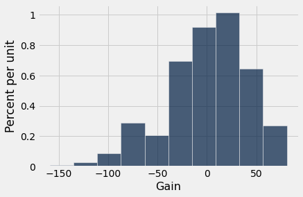
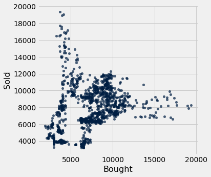
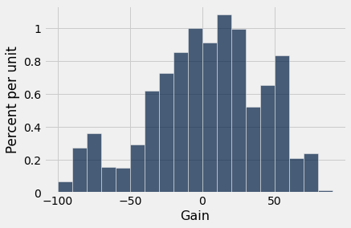
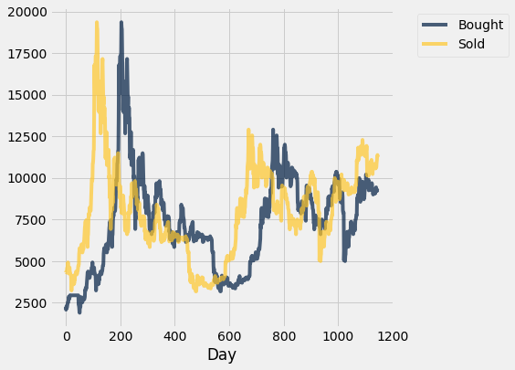

1.2 Bitcoin¶
from datascience import *
import numpy as np
%matplotlib inline
import matplotlib.pyplot as plots
plots.style.use('fivethirtyeight')
bitcoin = Table.read_table('http://faculty.ung.edu/rsinn/bitcoin.csv')
bitcoin.num_rows
1236
bitcoin
| Date | Symbol | Open | High | Low | Close |
|---|---|---|---|---|---|
| 5/26/2017 | BTCUSD | 2524.99 | 2650 | 2059.84 | 2263.65 |
| 5/27/2017 | BTCUSD | 2263.65 | 2347 | 1899.45 | 2086.56 |
| 5/28/2017 | BTCUSD | 2086.56 | 2325 | 2086.56 | 2227.56 |
| 5/29/2017 | BTCUSD | 2227.56 | 2381.07 | 2145.87 | 2305 |
| 5/30/2017 | BTCUSD | 2305 | 2345 | 2151.25 | 2203.58 |
| 5/31/2017 | BTCUSD | 2203.58 | 2332.88 | 2176.5 | 2305.16 |
| 6/1/2017 | BTCUSD | 2305.16 | 2470.47 | 2305.16 | 2414.11 |
| 6/2/2017 | BTCUSD | 2414.11 | 2474.16 | 2381.05 | 2474.16 |
| 6/3/2017 | BTCUSD | 2474.16 | 2584.21 | 2450 | 2546.44 |
| 6/4/2017 | BTCUSD | 2546.44 | 2564.33 | 2479.32 | 2534.13 |
... (1226 rows omitted)
Investment Analysis¶
Suppose you were to buy $100 of bitcoin, hold for exactly 90 days, then sell it. How often would you have made money over the last four years?
dates = bitcoin.column('Date')
purchase = dates.take(np.arange(bitcoin.num_rows - 90))
sell = dates.take(np.arange(90, bitcoin.num_rows))
closing_price = bitcoin.column('Close')
purchase_price = closing_price.take(np.arange(bitcoin.num_rows - 90))
sell_price = closing_price.take(np.arange(90, bitcoin.num_rows))
invest = Table().with_columns(
'Day', np.arange(bitcoin.num_rows - 90),
'Purchase', purchase,
'Bought', purchase_price,
'Sell', sell,
'Sold', sell_price,
'Gain', (sell_price - purchase_price ) / sell_price * 100 )
invest
| Day | Purchase | Bought | Sell | Sold | Gain |
|---|---|---|---|---|---|
| 0 | 5/26/2017 | 2263.65 | 8/24/2017 | 4312.44 | 47.5088 |
| 1 | 5/27/2017 | 2086.56 | 8/25/2017 | 4356.32 | 52.1027 |
| 2 | 5/28/2017 | 2227.56 | 8/26/2017 | 4340.94 | 48.6848 |
| 3 | 5/29/2017 | 2305 | 8/27/2017 | 4315.74 | 46.5909 |
| 4 | 5/30/2017 | 2203.58 | 8/28/2017 | 4385 | 49.7473 |
| 5 | 5/31/2017 | 2305.16 | 8/29/2017 | 4589.06 | 49.7684 |
| 6 | 6/1/2017 | 2414.11 | 8/30/2017 | 4577.26 | 47.2586 |
| 7 | 6/2/2017 | 2474.16 | 8/31/2017 | 4732.24 | 47.7169 |
| 8 | 6/3/2017 | 2546.44 | 9/1/2017 | 4927.29 | 48.3197 |
| 9 | 6/4/2017 | 2534.13 | 9/2/2017 | 4606.29 | 44.9854 |
... (1136 rows omitted)
invest.hist('Gain')

invest.scatter('Bought', 'Sold')

Notice in the above scatter plot that the diagonal line from bottom-left to top-right would represent the break-even trades.
max(invest.column('Gain'))
80.9149409777988
min(invest.column('Gain'))
-159.12475695666691
invest.bin('Gain', bins = np.arange(-160,100,10))
| bin | Gain count |
|---|---|
| -160 | 1 |
| -150 | 2 |
| -140 | 3 |
| -130 | 1 |
| -120 | 4 |
| -110 | 9 |
| -100 | 8 |
| -90 | 31 |
| -80 | 41 |
| -70 | 18 |
... (16 rows omitted)
invest.hist('Gain', bins = np.arange(-100,100,10))

Plot Price 1 vs. Price 2¶
If we create a table with ONLY numeric columns, then the .plot method will create multiple line plots. We specify the x-axis variable, and all others get
When yellow (Price 2) is higher, the investor is winning. When blue is higher, the investor is losing.
price_diff = invest.select('Day', 'Bought', 'Sold')
price_diff.plot('Day')
